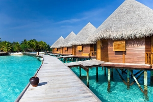
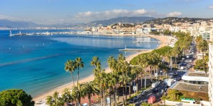
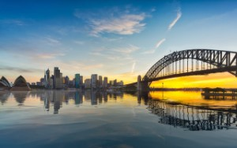

Our Catalogue of Stays
Seaside Stays
Stay in Corsica
Location : Seaside
Activity : Water Sports
Country : France
Duration : 1 week
Price : 600€
The hotel Stella Di Mare 3* is located in the magnificent gulf of Ajaccio in Corsica, in front of the famous bloody islands, 7 km from the city center. It is served directly by the bus N°5. Ajaccio airport is 15km away.
Stay in Cannes
Location : Seaside
Activity : Water Sports
Country : France
Duration : 1 week
Price : 600€
Cannes, a seaside town on the French Riviera, is famous for its international film festival. The Croisette, a boulevard that runs along the coast, is lined with sandy beaches, luxury boutiques and palaces. This boulevard is also home to the Palais des Festivals et des Congrès, a modern building with its red carpet, and the Allée des Stars, the "walk of fame" in Cannes.
Stay in Malaga

Location : Seaside
Activity : Water Sports
Country : Spain
Duration : 1 week
Price : 600€
In addition to its 16 sunny beaches, this Andalusian city bathed by the Mediterranean has a rich cultural life. In recent years, Malaga, the birthplace of Pablo Picasso, has reinvented itself and opened museums for all tastes.
Stays in the Mountains
White Mountain & Beaufort

Location : Mountain
Activity : Hiking
Country : France
Duration : 1 week
Price : 600€
Beaufort is a French commune located in the Savoie department, in the Auvergne-Rhône-Alpes region. The commune is the main locality of Beaufortain which owes its name to it. The summer and winter tourist resort of Arêches-Beaufort is included in the perimeter of the commune.
Stay in Lourdes

Location : Mountain
Activity : Hiking
Country : France
Duration : 1 week
Price : 600€
Lourdes is a city in southwestern France, at the foot of the Pyrenees. It is known throughout the world for the shrine of Our Lady of Lourdes, or the Domaine, a Catholic pilgrimage site. Each year, millions of people visit the grotto of Massabielle where, in 1858, the Virgin Mary is said to have appeared to a young girl. Pilgrims can drink or bathe in the water that flows from a spring in the cave.
Stay in Chastreix & Puy de Sancy

Location : Mountain
Activity : Hiking
Country : France
Duration : 1 week
Price : 600€
The Puy de Sancy is a summit of the Monts Dore located in the department of Puy-de-Dôme, 35 kilometers southwest of Clermont-Ferrand. It is, with its 1 885 meters of altitude, the highest point of the Massif Central and the highest volcano in France.
International Stays
Stay in Seljalandsfoss

Location : Seaside
Activity : Visit
Country : Iceland
Duration : 1 week
Price : 1000€
Seljalandsfoss is a waterfall in southern Iceland measuring 65 meters high. It is located near the Skogafoss waterfall. Its particularity is the possibility of passing behind it which offers a new point of view and makes it more impressive. At sunset, the light makes the water an orange color, melting with the rock behind it.
Stay in Aalborg

Location Urban
Activity : Discover
Country : Denmark
Duration : 1 week
Price : 600€
Aalborg or Ålborg is a city in Denmark located in Jutland. As of January 2014, the city has 139,016 inhabitants and is the fourth most populous city in the country. It is the capital of the homonymous municipality, in the region of North Jutland.
Stay in Sydney
Location : Seaside
Activity : Water Sports
Country : Australia
Duration : 1 week
Price : 900€
Sydney, the capital of New South Wales and one of Australia's largest cities, is renowned for its harbor-side opera house, with its distinctive sail-shaped design. The sprawling Darling Harbour and the smaller Circular Quay harbour are major hubs of waterfront living, close to the Harbour Bridge and the Royal Botanic Gardens.